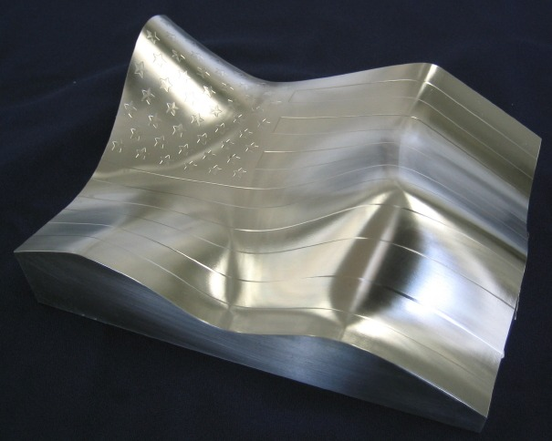

2.3.1. Takým Yolu Oluþturulurken Bilinmesi Gereken Temel Noktalar
1. Sabit Talaþ Hacmi: Kaldýrýlan talaþ hacmini sabit ya da sabite çok yakýn hale getirmek gerekir. Bunu yapmak için yana kayma hareketlerinin deðerlerine dikkat etmek gerekmektedir.
2. Yumuþak Takým Hareketi: Yüksek hýzlarda takýmýn keskin ve ani geçiþler yapmamasýný saðlamak gerekir. Keskin takým yollarýnýn köþeleri yuvarlatýlmalýdýr.
3. Dýþ köþelerde de iç köþelerde olduðu gibi takým yollarýnýn köþeleri yuvarlatýlmalýdýr.
4. Derin diþi ve cep iþlemelerinde farklý uzunluklara sahip farklý takýmlar efektif olarak kullanýlmalýdýr. Kýsa takýmlar uzun takýmlara göre daha rijit olduklarýndan derin ceplerde daha iyi kesme yaparlar.
5. Kaba pasolarda 5-10 derecelik helisel giriþ, yari finiþ ya da finiþ pasolarda ise dairesel giriþ tercih edilmelidir.
6. Finiþ iþleme yaparken, scallop yüksekliðini minimumda tutmak gerekir. Bu deðeri 0.001mm civarýnda, kesim toleranslarý 0.001-0.005 arasýnda ayarlamak yüzey kalitesini iyileþtirecektir.
7. Parçalarýn finiþini yaparken, tek seferde finiþ atmak yerine bölgelere ayýrýp o bölgeye en uygun formda iþleme yöntemi seçmek gerekmektedir (6).
2.4. Kullanýlan Kesici Takýmlar
2.4.1. Kaplamalý Sinterlenmiþ Karbürler
En belli baþlý kaplama malzemeleri titantum karbür (TiC), titanyum nitrür (TiN), alüminyum oksit - seramik (Al203) ve titanyum karbo nitrür (TiCN)' dür. Titanyum karbür ve alüminyum oksit yüksek aþýnma direnci saðlayan, kimyasal olarak baþka malzemelerde reaksiyona girmeyen, takým ile talaþ arasýnda kimyasal ve ýsýl bir kalkan oluþturan, çok sert malzemelerdir. TiN, o derece sert olmamasýna karþýn kesici ucun yüzeylerinde daha düþük sürtünme katsayýsý ve daha iyi krater aþýnmasý direnci saðlamaktadýr. TiN' in altýn sarýsý bir rengi vardýr (7).
Yüksek hýzda iþlemelerde kesici takým seçerken 40 HRC nin altýndaki malzemelerde TiN (titanyum-nitrür) ve TiCN (titanyum-karbo nitrür), 40 HRC ve üzerindeki sertliðe sahip malzemelerde TiAlN (titanyum-aluminyum-nitrür) kaplanmýþ kesici takýmlarýn kullanýlmasý tavsiye edilmektedir. TiAlN kaplanmýþ kesici takýmlar, diðer takýmlara göre 8 kat daha pahalýdýr, fakat genel ortalamada ömür ve tezgah saati olarak diðer takýmlara göre daha verimli olmaktadýrlar (2).
2.4.2. PCBN Kesici Takýmlar
Çok kristalli kübik bor nitrür uçlar ile daha yüksek kesme hýzlarýnda, daha fazla talaþ derinliðinde kesme yapýlabilir ve sertleþtirilmiþ çeliklerin ve sertliði 35 HRC ve daha yukarý olan sert Ni, Cr - Ni alaþýmlý Inconol, Rene, Waspalay, Stellite gibi yüksek sýcaklýk alaþýmlarýn iþlenmesinde kullanýlabilmektedir (8).
Çok kristalli kübik bor nitrürlerin temel özellikleri;
1- Yüksek sertlik,
2- Yüksek abrasyon direnci,
3- Yüksek basma dayanýmý,
4- Yüksek termal iletkenlik (8)
Bu takýmlarla aþaðýdaki malzeme gruplarý yüksek performansla iþlenebilmektedir.
1- Sertliði 45 - 65 HRC olan malzemeler, AISI 4340, 8620, M2 ve T15 gibi sertleþtirilmiþ çelikler ve nikel esaslý sert malzemeler
2- Brinell sertliði 180 - 240 olan dökme demirler, abrasiv demirli metaller ve nikel dirençli malzemeler,
3- Sertleþtirilmiþ parçalarýn bitirme iþlemlerinde, tipik olarak takým çelikleri veya talaþ derinliði 0.5 mm' den az ve 0.2 mm' lik yüzeyi sertleþtirilmiþ parçalar,
4- Jet motoru parçalarý gibi uzay endüstrisinde kullanýlan yüksek nikel alaþýmlý süper alaþýmlar (8).
Baþka bir deyiþle, PCBN kesici takýmlarýn en iyi uygulama alanlarý, kaplamalý sinterlenmiþ karbürlü kesici takýmlarla iþlenemeyecek ya da bu takýmlarýn çok çabuk aþýnýp bozunmasýna neden olacak malzemelerin iþlenmesidir (8).
2.5. HSM Sonucu Elde Edilen Yüzey Kalitesi
Yüksek hýzda iþlemede, son pasoda 0.1 mm stepover, pozitif boþluk açýlý (rake angle) küçük takýmlar ile iþleme stratejisi geliþtirildiðinde yüzey üzerinde 0.001 mm pürüzlülük (cusp) oluþmaktadýr, bu ise ek bir iþçilik gerektirmeyecek kadar düzgün yüzeylerin elde edilmesi saðlar. Þekil 2.3. de HSM sonucu elde edilen yüzey kalitesi gösterilmiþtir (2).

Þekil 2.3. HSM ile elde edilen yüzey kalitesi (9)
VIBRA-FREE HD Roughing & Finishing Milling
3. SONUÇ ve ÝRDELEME
Bu çalýþmada, imalat sürelerini sertliðe baðlý kalmaksýzýn en az %40 azaltabilen, Yüksek hýzda iþleme tekniði ele alýnmýþtýr. Bu iþleme yönteminin teorik alt yapýsý yaklaþýk yüz yýl öncesine dayanmaktadýr ancak ülkemiz sanayisinde yeni uygulama alaný bulmaktadýr. Bu tekniði verimli kullanabilmenin yolu Yüksek hýzda iþleme yöntemine uygun CNC tezgahtýr. Bu tezgahlarýn ise diðer CNC tezgahlarýndan en önemli farký mekanik aksamý yanýnda servo çevrim zamanlarýnýn çok hýzlý olmasýdýr. Bu teknolojiyi daha ileri götürmenin yolu servo çevrim zamanlarýnýn daha kýsa tutulmasýndan geçmektedir.
KAYNAKLAR:
1. MERTOÐLU, Tolga, Tezmaksan A.Þ., Ýstanbul, Temmuz 2006
2. KALAYCIOÐLU, Bülent, Altar Teknoloji Ltd. Þti.
3. MAMUR, Turgay, Yüksek Hýzda Ýþleme ve Makine Mekaniði, www.makineteknik.com
4. Yüksek Hýzda Ýþlemede Kontrol Sistemi Yapýsý, www.makineteknik.com
5. www.deltatau.com > Delta Tau Data Systems, Inc. - Motion Control
6. ALPAY, Cem, Unigraphics NX3 ile Yüksek Hýzda Ýþleme Teknikleri, Üçgen Yazýlým
7. ÇAKIR, M., C., Modern Talaþlý Ýmalatýn Esaslarý, Ceylan Matbaacýlýk, 1999
8. ÞAHÝN, Yusuf, Talaþ Kaldýrma Prensipleri, Cilt 1, Nobel Yayýn Daðýtým, Ankara, 2000
9. www.vibrafree.com > VIBRA-FREE: UHSHM (Ultra-High-Speed-Hard-Milling)